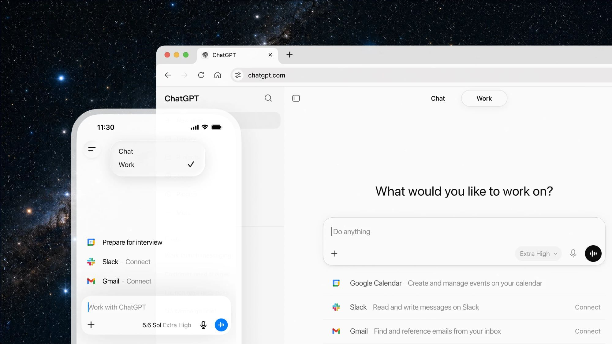

OpenAI 推出 ChatGPT Work：可跨应用自主工作的 AI 智能体
2026年7月10日，OpenAI 正式发布了 ChatGPT Work——一个能够跨应用、跨文件自主完成复杂任务的 AI 智能体。这不仅是 OpenAI 产品线的又一次升级，更标志着 AI 从"问答工具"向"工作伙伴"的关键转型。同步推出的 GPT-5.6 系列模型（Sol、Terra、Luna）为这一产品提供了强大的底层能力支撑。

背景分析：AI Agent 赛道的关键转折点
2026 年被称为"AI Agent 元年"。从年初 Anthropic 发布具有计算机使用能力的 Claude，到 Microsoft 成立 Frontier Company 将 6000 名 AI 工程师派驻企业现场，再到 Google 推出 Project Mariner——各大科技巨头不约而同地将战略重心从"更强的对话模型"转向"能真正干活的智能体"。 OpenAI 的 ChatGPT Work 正是在这一背景下诞生。它并非简单的功能叠加，而是整合了 Codex（每周 500 万用户使用）的代理能力、Operator 的浏览器操控能力、以及 Deep Research 的信息综合能力，形成了一个统一的 Agent 平台。
核心内容：ChatGPT Work 的五大能力
1. 跨应用工作能力
ChatGPT Work 可以连接 Slack、Teams、Google Drive、SharePoint、邮件、日历、CRM 等工具，通过 @+应用名 的方式拉取上下文。在桌面端，它拥有内置浏览器、本地文件和应用访问权限，能够在不同工具之间自由穿梭，完成数据收集、分析和产出。
2. 创建完整工作成果
从幻灯片到电子表格，从文档到交互式网站（Sites 功能，公开测试版），ChatGPT Work 能将一个模糊的目标转化为可交付的成品。它甚至可以根据底层数据变化自动更新已创建的网站内容。
3. 定时任务与委托
支持一次性、周期性或事件触发的定时任务——例如：每天检查 Slack 更新并刷新议程、汇总 Dashboard 变化、监控客户反馈生成产品创意、收到新邮件后更新演示文稿。用户可精细控制访问权限、检查频率和审批要求。
4. 计算机使用能力
桌面端支持 ChatGPT 在后台自主点击、打字、移动文件——既可以执行一次性操作，也可以作为定时任务的一部分持续运行。
5. Sites（公开测试版）
这是本次发布中最具想象力的功能之一：将任何工作成果一键转化为可交互的 Web 应用——Dashboard、项目跟踪器、原型、内部门户，均可通过 URL 分享，并能随着底层信息的更新而自动同步。

各方反应
"ChatGPT Work is an agent in ChatGPT that helps you take on more ambitious tasks."
—— OpenAI 官方博客
"我们将手动月度发布检查转化为可重复的工作流，覆盖发布计划、Jira、上市时间表——从支持 1 个项目经理扩展到约 50 个。"
—— Vaneet Seth，RingCentral
"（ChatGPT）研究了竞争对手的优势和劣势，构建了数据集——将数周的分析压缩到几小时。"
—— Nathan Bolt，Virgin Atlantic
在企业客户中，Zapier 的 Angela Ferrante 利用 ChatGPT Work 构建了跨 CRM、邮件和工具的数以千计潜在客户审查系统，每周自动生成 Dashboard——带来了 7 位数的潜在销售额。NVIDIA 的 Will Daney 用其自动化 GTC 会议准备工作，取代了 40% 的会前时间。
分析人士指出，ChatGPT Work 的发布与 Microsoft Frontier Company、Anthropic DeployCo 等企业级 Agent 方案形成了直接竞争。不同的是，OpenAI 选择了"平台中立"策略——支持在任何操作系统、任何工具生态中运行，而非局限于自有平台。
深度解读：Agent 时代的三个趋势
趋势一：从 API 到 Agent 的范式迁移
过去两年，AI 产品的价值交付模式经历了三次跃迁：第一代是 API 调用（按 token 付费），第二代是 Copilot 嵌入（按席位付费），而第三代 Agent 模式将彻底改变这一格局——按结果付费。ChatGPT Work 的推出意味着 OpenAI 已经准备好从"卖工具"转向"卖服务"。
趋势二：企业级 Agent 的安全护栏成为竞争壁垒
ChatGPT Work 建立在 ChatGPT Enterprise 基础之上，提供了精细的 Admin 控制（插件管理、浏览器/网络设置、敏感操作限制）、桌面治理策略（基于 Codex 企业模型）、以及 Auto-review 功能——在执行重要操作前由高级模型自动审核，防止数据未经授权外泄。
趋势三：Agent 正在模糊"软件"和"服务"的边界
Sites 功能允许任何人基于自然语言描述就生成可交互的 Web 应用，这在本质上是一种"编程民主化"的终极形态。当 5M+ 人每周使用 Codex、其中超过 1M 人并非开发者时，Agent 正在重新定义"谁可以创造软件"。
总结
ChatGPT Work 的发布是 OpenAI 从"对话 AI"向"行动 AI"转型的关键一步。当 AI 不再仅仅是回答问题，而是能够长时间自主工作、连接各类工具、产出完整成果时，它对知识工作者的生产力影响将是指数级的。正如 OpenAI 在公告中所说——"这只是让每个人都能够将想法转化为现实的第一步"。
📎 原文链接：https://openai.com/index/chatgpt-for-your-most-ambitious-work
→ 看今日完整快报（共 50 条）